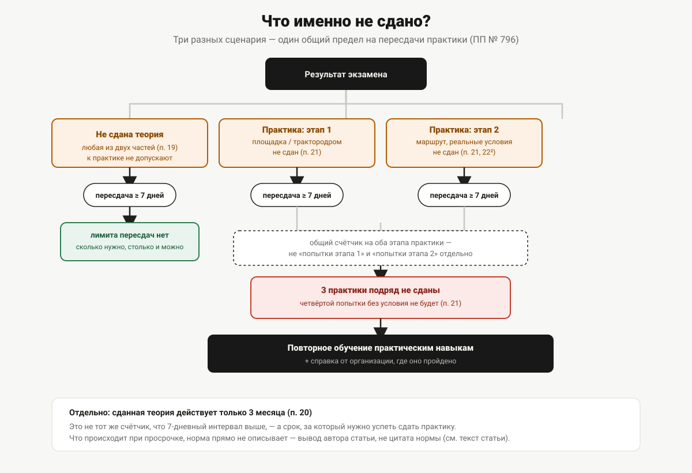

Что делать, если не сдал экзамен
Повторная попытка не раньше чем через семь дней, сданная теория действует три месяца, три подряд заваленные практики — снова за обучение. Разбираем последовательность и как в неё не попасть.
Лимит на провалы практического экзамена есть, и он конечный: после третьей подряд несданной попытки Правила допуска к управлению самоходными машинами (постановление Правительства РФ от 12.07.1999 № 796) отправляют кандидата не на четвёртую попытку, а обратно на обучение практическим навыкам. Дальше — по пунктам: что именно происходит в зависимости от того, что конкретно не сдано, и сколько на это уходит времени.

Не сдана теория
Кандидат, не сдавший теоретический экзамен, к практическому экзамену не допускается — это прямая формулировка пункта 19 Правил допуска, без исключений. Повторно теоретический экзамен назначается не ранее чем через 7 дней. Тот же пункт не устанавливает верхнего лимита попыток пересдачи теории: сколько раз потребуется, столько и можно пересдавать, соблюдая семидневный интервал между попытками.
Сдана теория, но не первый этап практики
Кандидат, не сдавший практический экзамен, допускается к повторному практическому экзамену не ранее чем через 7 дней (пункт 21 Правил допуска). Формулировка пункта 21 говорит о практическом экзамене в целом, не разделяя отдельно интервал для первого и второго этапа, — то есть тот же семидневный интервал действует и здесь.
Здесь начинает работать ограничение по числу попыток: пункт 21 отдельно оговаривает, что происходит после трёх подряд несданных попыток (см. ниже).
Не сдан второй этап практики
Ко второму этапу практического экзамена (движение в реальных условиях эксплуатации) кандидата не допускают, пока не сдан первый (пункт 22² Правил допуска) — то есть до второго этапа он в принципе не доходит, если не закрыл первый. Если же кандидат уже на втором этапе, но не сдал его, действует тот же пункт 21: повторная попытка не ранее чем через 7 дней, и тот же счётчик из трёх подряд несданных попыток, о котором речь пойдёт дальше. Правила допуска не разводят это правило отдельно по этапам практики — норма говорит о практическом экзамене как таковом, без деления на «попытки первого этапа» и «попытки второго этапа» как разные счётчики.
Три практики подряд не сданы
Это единственная точка во всей процедуре, где провал перестаёт быть просто поводом прийти ещё раз. Пункт 21 Правил допуска формулирует так: кандидат, не сдавший подряд 3 раза практический экзамен, к следующей сдаче допускается только после повторного прохождения обучения практическим навыкам управления самоходными машинами и предоставления справки об этом от организации, в которой прошло повторное обучение.
Формулировка жёсткая и без вариантов смягчения: не «рекомендуется пройти», а «допускается только после». Практически это означает возврат в учебную организацию — не с нуля по всей программе (справка требуется именно о повторном обучении практическим навыкам, а не обо всей программе заново), но с обязательным документальным подтверждением, что практическая подготовка пройдена повторно.
Семидневный интервал: откуда считать
И для теории (пункт 19), и для практики (пункт 21) Правила допуска устанавливают одинаковый по длительности, но раздельно сформулированный интервал — не ранее чем через 7 дней после несданной попытки. Это не единая общая норма «7 дней между любыми попытками», а два отдельных правила с одинаковым числом: пересдача теории считается от несданной теории, пересдача практики — от несданной практики. Норма не указывает, что попытка теории и попытка практики должны разноситься на 7 дней друг от друга, если это разные части экзамена, — интервал касается именно повторной попытки той же части, которая не сдана.
Трёхмесячный срок действия теории: что происходит после
Оценка, полученная на теоретических экзаменах, действительна в течение 3 месяцев (пункт 20 Правил допуска). Это отдельный срок, не связанный с семидневным интервалом пересдач, — он отвечает на другой вопрос: сколько времени есть на сдачу практики после того, как теория уже сдана.
Прямо в Правилах допуска не прописано, что происходит, если трёхмесячный срок истёк, а практика ещё не сдана. Но логическая связь между двумя пунктами напрашивается: пункт 19 требует, чтобы теория была сдана, для допуска к практике, а пункт 20 ограничивает действие этой сданной теории тремя месяцами. Разумно предположить, что по истечении срока теорию нужно пересдавать заново, прежде чем снова пытаться сдать практику, — но отдельной нормы, прямо описывающей именно этот сценарий («теория просрочена, практика не сдана»), в тексте Правил допуска нет. Это вывод автора статьи из совокупности двух пунктов, а не цитата отдельной нормы, и его стоит воспринимать с этой оговоркой.
Практический смысл, даже с этой оговоркой: три месяца — реальный ограничитель на то, сколько можно тянуть с практикой после сданной теории, и планировать попытки практики стоит с запасом внутри этого срока, а не вплотную к его истечению.
Приостановление государственной услуги
Отдельно от лимита попыток есть процедурный механизм — приостановление предоставления государственной услуги. Пункт 45² Правил допуска перечисляет основания для приостановления, среди них — неудовлетворительная сдача теоретического экзамена и неудовлетворительная сдача практического экзамена (наравне с непредставлением удостоверения при наличии сомнений в его подлинности). Срок приостановления не может превышать 30 календарных дней со дня, следующего за днём установления оснований.
Это не то же самое, что интервал между попытками (7 дней) или срок действия теории (3 месяца) — приостановление касается самой процедуры оказания услуги органом гостехнадзора и её предельного срока, а не персонального лимита попыток кандидата. На практике эти сроки существуют параллельно, и превышение любого из них требует отдельного разбирательства с конкретным органом гостехнадзора, а не только ориентировки на общие нормы.
Пошлина при пересдаче
Отдельный вопрос, на который Правила допуска прямого ответа не дают, — нужно ли платить государственную пошлину заново при каждой пересдаче. В тексте Правил допуска такого требования нет: пошлина упоминается в связи с самой выдачей удостоверения (пункт 12¹), а не с каждой отдельной попыткой сдачи экзамена. Точный порядок в части действующей ставки и условий уплаты нужно уточнять по действующей редакции Налогового кодекса РФ и, возможно, региональному административному регламенту — этому посвящена отдельная статья «Госпошлина за удостоверение тракториста».
Как планировать попытки, чтобы не потерять теорию
Из всего разобранного выше складывается практический ориентир, не норма: если теория уже сдана, стоит планировать попытки практики так, чтобы уложиться в трёхмесячный срок её действия — с запасом на случай одной несданной попытки практики и последующей паузы минимум в 7 дней перед следующей. Если пауза после несданной практики растягивается, а до истечения трёх месяцев остаётся мало времени, разумно заранее уточнить в органе гостехнадзора, что произойдёт, если срок истечёт раньше следующей попытки, — прямого ответа на этот случай сами Правила допуска не дают (см. выше).
Полное устройство всех трёх экзаменов и место каждого из них в общей последовательности — в статье «Экзамен в гостехнадзоре: как он устроен». Перечень манёвров практического экзамена, из-за которых чаще всего случается провал первого этапа, — в статье «Практический экзамен на самоходной машине». Состав вопросов теории и порог сдачи — в статье «Теория в гостехнадзоре: билеты и порог сдачи». Сколько часов практики даёт типовая программа обучения, прежде чем кандидат вообще выходит на первую попытку, — в статье «Сколько длится обучение на тракториста».